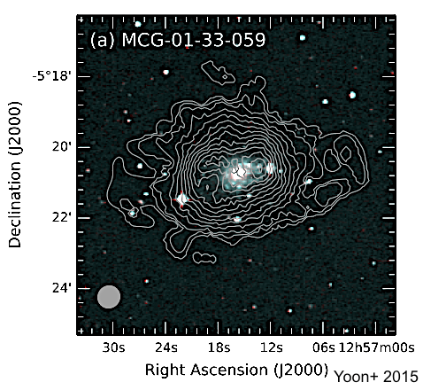
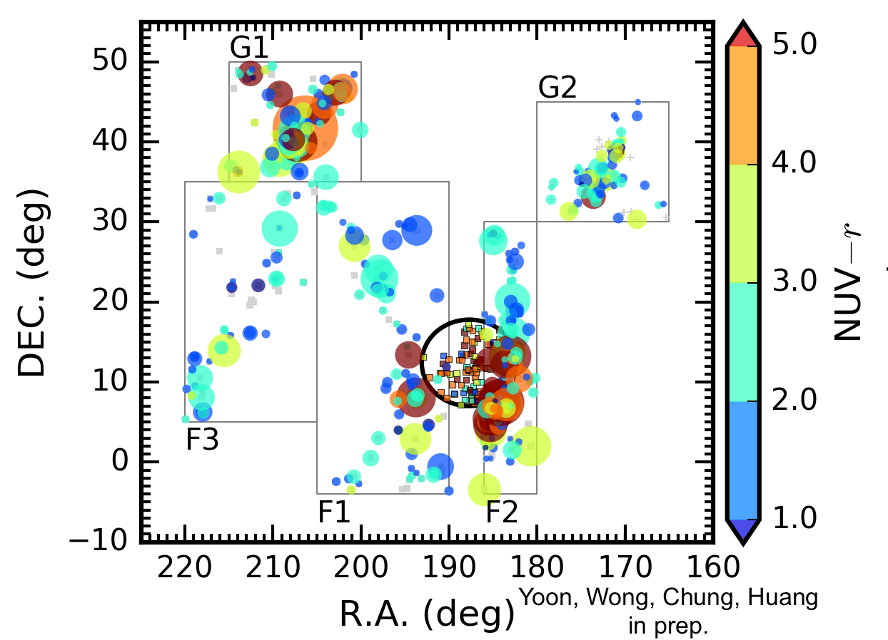
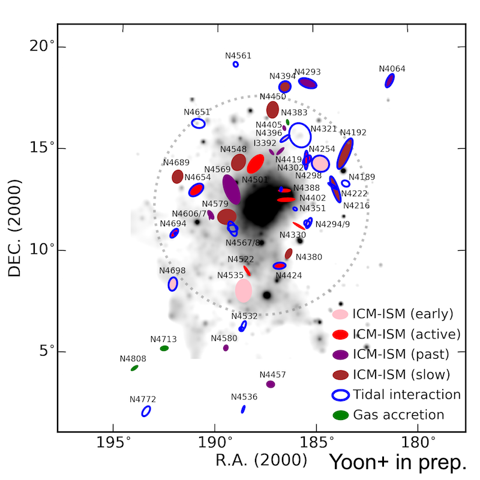
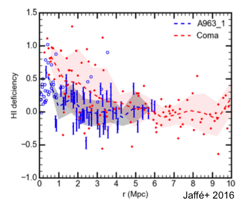

Hyein Yoon / 윤혜인
I am currently a G-LAMP postdoctoral researcher at Seoul National University and the Project Scientist for the ASKAP-FLASH Survey Science team as an affiliate of the University of Sydney. My research interests are on the evolution of galaxies driven by their environment over cosmic time, with a specific focus on neutral atomic hydrogen (HI) line observations. From my PhD studies to the present, I have been studying the HI gas and star formation properties of galaxies in large-scale filaments, groups, and cluster environments. I am actively involved in the FLASH team, which aims to observe and measure HI 21-cm absorption lines toward background radio sources across the sky at declination < 15 deg and galactic latitude > 8.5 deg. With the new data obtained from the FLASH Pilot Survey and ongoing Full Survey observations, my primary roles include assessing data quality and searching for absorption lines from the spectra. Please refer to the #Research section below for further details.
저는 서울대학교 지-램프 사업단 박사 후 연구원이며, 호주 시드니 대학 소속 연구원으로 ASKAP-FLASH 서베이팀에서 프로젝트 사이언티스트를 맡고 있습니다. 중성 수소 선 스펙트럼 관측을 통해 주변 환경과 시간에 따라 은하가 어떻게 진화하는지 연구하며, 전파 망원경을 이용하여 은하 내 가스의 "방출선"을 직접 관측하거나 강한 배경 전파원 방향으로부터 가스의 "흡수선"을 찾고 분석합니다. 거대 구조 필라멘트, 은하 그룹, 은하단 등 다양한 밀도 환경에 위치한 은하들의 가스와 별 형성 특성도 함께 연구하고 있습니다. 특히 ASKAP-FLASH 팀의 파일럿 서베이 및 본 서베이의 관측 데이터가 연구에 적합한 퀄리티인지 검증하고, 적위 15도 이하와 은위 8.5도 이상의 하늘 전역에서 얻은 수십만 개의 스펙트럼에서 기존에 발견되지 않은 흡수선을 찾는 작업이 한창 진행 중입니다. 연구와 관련된 상세한 내용은 아래 #Research 요약을 참고해 주시길 바랍니다.
History + CV
I am based at the #Institute for Data Innocation in Science (IDIS) of #Seoul National University as a G-LAMP postdoctoral researcher (G-LAMP program: Global Learning & Academic research institution for Master's & PhD students, and Postdocs), working with the #ExgalCos team at #Department of Physics and Astronomy. I am also a honorary research fellow at #the University of Sydney and have been the Project Scientist for #ASKAP-FLASH team since 2021. My current work is focusing on the neutral hydrogen (HI) gas in galaxies based on radio spectral line observations: i) HI 21-cm emission lines - studying the evolution of galaxies and their environment through gas morphology and kinematics; ii) HI 21-cm absorption lines - searching for HI absorption lines along the line of sight to background radio continuum sources to understand the origin of the gas (Further details can be found in the #Research section below).
Before joining SNU, I was an #ASTRO-3D postdoctoral research associate at #Sydney Institute for Astronomy (SIfA) of the University of Sydney from 2019 to 2023. As I deeply involved in the FLASH Pilot and Full Surveys, I spent more time at #CSIRO - Marsfield to work with the ASKAP Survey Science Team members.
Before moving to Sydney, I completed my Ph.D. at #Department of Astronomy of #Yonsei University in 2019, working with #Prof. Aeree Chung. The thesis title is "The Impact of Large-scale Environments on Galaxy Evolution: Insights from the Neutral Hydrogen Gas in Galaxies Inside and Outside of the Virgo Cluster". My thesis work focused on how the neutral atomic hydrogen (HI) gas and stellar properties of galaxies are influenced by their surroundings inside and outside the Virgo cluster (Please see the #Research section - HI imaging study; Mapping the large-scale structures; Phase-space analysis; Quantitative study of environmental effects; BUDHIES projects). I was a visiting student at #International Centre for Radio Astronomy Research (ICRAR) of the University of Western Australia for seven months in 2016-2017 to collaborate with #Dr. O. Ivy Wong (#Endeavour Research Fellowship Program).
Previously, I was a master student in the same institute. The MSc thesis title is "Diagnostics to Probe Environmental Effects on Late-type Galaxies in the Virgo Cluster", supervised by Prof. Aeree Chung. Before the MSc, I earned my bachelor's degree in Astronomy and Physics (double major) in 2011 at Yonsei.
SNU Campus, Winter 2024
USyd Campus, Spring 2020
Yonsei Campus with #KVN, Fall 2018
Research

HI absorption line survey
toward radio continuum sources (ASKAP-FLASH)I have been working in the ASKAP-FLASH (the Australia SKA Pathfinder-First Large Absorption Survey in HI) team. The key science goal of the survey is to observe and measure both associated and intervening HI absorption lines at 0.4 < z < 1.0 toward background radio continuum sources over the 25,000 square degrees of the sky (600 pointings in total). This will provide a new probe of the HI content to understand galaxy evolution at intermediate redshifts. The five-year of Full Survey has started in late 2022. Pilot Survey Phase 1 and 2 observations with a full array of 36 ASKAP antennas have been completed, and the data has been released on CASDA. More details can be found from the FLASH Pilot Data Release paper: arXiv:2408.06626.
in collaboration with the ASKAP-FLASH team - PIs: Elaine Sadler (USyd/CSIRO) and Elizabeth Mahony (CSIRO)
- 
HI imaging study of galaxies
in Virgo filaments/groupsWe carry out an HI imaging study of galaxies in Virgo outskirts to find observational signatures of the "pre-processing" of galaxies before falling into the cluster environment. 14 galaxies selected from the filaments and infalling groups around Virgo were observed by using the GMRT, JVLA, and WSRT (124 hours in total). We identify the signatures of gas accretion, ram pressure stripping, and tidal interaction in the low-to-moderate density environments.
(Yoon et al., 2015, PKAS, 30, 495,
Yoon et al. in prep.)in collaboration with Aeree Chung (Yonsei), Chandreyee Sengupta (Yonsei), O. Ivy Wong (ICRAR/UWA), Martin Bureau (Oxford), Soo-Chang Rey (CNU) and Jacqueline van Gorkom (Columbia)
- 
Mapping the stellar and HI gas properties of galaxies in Virgo filaments/groups To get a grasp of how galaxies are processed in low-density environments before falling into high-density regions, we map the spatial distribution of the galaxies within each large-scale structure around Virgo with their multi-wavelength colors (e.g. W3-W1, NUV-r, and g-r) and the HI gas content. Over a broad range of stellar masses, a significant fraction of red galaxies is found in several filaments and groups.
(Yoon et al., to be submitted)in collaboration with O. Ivy Wong (ICRAR/UWA), Aeree Chung (Yonsei) and Shan Huang (NYU)
A Phase-space analysis of gas-stripped Virgo galaxies
We investigate the orbital histories of 35 VIVA galaxies at various stages of HI gas stripping (early, active, and past) by comparing the location of galaxies with different HI morphology in phase-space. Most galaxies at the early stage of gas stripping are found in the first infall region, while galaxies undergoing active HI stripping mostly appear to be falling in or moving out near the cluster core. We also find some clearest candidates for the “backsplashed” galaxies.
(Yoon et al., 2017, ApJ, 838, 81,
+ see a related article)in collaboration with Aeree Chung (Yonsei), Rory Smith (KASI) and Yara L. Jaffé (IFA/UV)
- 
Diagnostics to probe key environmental processes on Virgo galaxies (VIVA II)
The goal of this project is to identify the environmental effects affecting individual galaxies throughout the Virgo cluster by using quantitative diagnostics based on the observational data. We utilize high resolution VIVA survey HI data and complementary multi-wavelength data to assess the physical processes either currently at work or that have influenced the sample in the past. We ultimately probe the dominant processes which drive galaxy evolution most as a function of the clustocentric distance and the local environment.
(Yoon et al., to be submitted)in collaboration with Aeree Chung (Yonsei), Jacqueline van Gorkom (Columbia), O. Ivy Wong (ICRAR/UWA), Jeffrey D. P. Kenney (Yale), Hugh Crowl (Bennington), Bernd Vollmer (CDS) and the VIVA team
→ #VIVA website - 
BUDHIES: Blind Ultra Deep HI Environmental Survey project
BUDHIES is a blind deep WSRT HI survey of galaxies in two clusters (Abell 963 and Abell 2192) at z = 0.16 to 0.22 and the large-scale structures around them. The HI gas as well as multi-wavelength properties in different environments, from voids to clusters, have been well studied to get better understanding of galaxy transformation at intermediate redshift. Please visit the #BUDHIES website for further details of the project.
(The figure is taken from
Jaffé et al., 2016, MNRAS, 461, 1202)in collaboration with the BUDHIES team
→ #BUDHIES website
Publications
You can see my publications from any of the following websites:
Contact
Email: hyein.yoon (at) snu.ac.krAstronomy Program
Department of Physics and Astronomy
Seoul National University
1 Gwanak-ro, Gwanak-gu, Seoul 08826